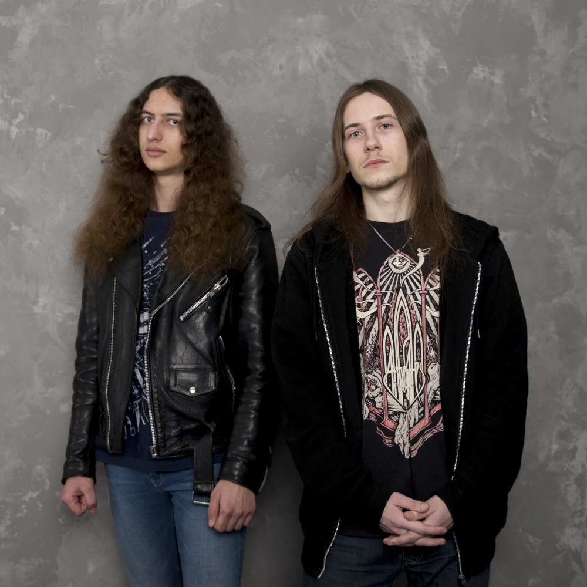

Skyglow was formed as a musical project of Alexander Mokin. In 2012 he started to write music for his first album, combining different subgenres of Death Metal. He was inspired by such bands as early In Flames, Be’Lakor, Metallica and, later, Death, Dissection and early Dark Tranquillity, though the music most of all resembles The Chasm and Necrophagist. Being raised in Russia in the poor city of Saratov he saw the corruption, the lies and the violence of the governemnt, so he chose this to be the main theme of the album.
In 2016 his friend guitarist Vlad Kudryavtsev agreed to help him with the recording, so they formed a band called “Eyes of Skyglow”. On March 29, 2017 they released a demo called “Curse of the Butterfly” which contained a song from the future album and an instrumental track. Due to lack of spare time, Vlad Kudryavtsev left the project.
Sergey Stepanenko, the leader of the band Excruciation by Silence, joined the band to record the full-length album. The recording started in June, 2017 and lasted for 5 months.
In December, 2017 the band changed its name to “Skyglow”. Their debut album was called “Thousand Years of Terror” and it tells about the horrors of Russian history. It was released on June 30th 2018 by Inverse Records (digitally) & Grotesque Sounds (CD).
In 2016 his friend guitarist Vlad Kudryavtsev agreed to help him with the recording, so they formed a band called “Eyes of Skyglow”. On March 29, 2017 they released a demo called “Curse of the Butterfly” which contained a song from the future album and an instrumental track. Due to lack of spare time, Vlad Kudryavtsev left the project.
Sergey Stepanenko, the leader of the band Excruciation by Silence, joined the band to record the full-length album. The recording started in June, 2017 and lasted for 5 months.
In December, 2017 the band changed its name to “Skyglow”. Their debut album was called “Thousand Years of Terror” and it tells about the horrors of Russian history. It was released on June 30th 2018 by Inverse Records (digitally) & Grotesque Sounds (CD).